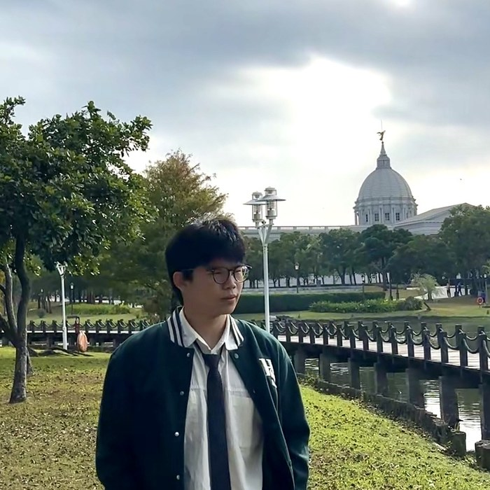

胡志明市
法式建築、熱鬧街區、咖啡館與西貢河，城市節奏快，畫面切換也快。
從胡志明的城市建築，走到美奈的海岸沙丘，再進入美托的湄公河水鄉。
這趟會在城市、沙丘和水鄉之間切換。先抓住三種節奏，走起來會更有感。

法式建築、熱鬧街區、咖啡館與西貢河，城市節奏快，畫面切換也快。
從漁村、海岸到紅白沙丘，城市感突然轉成開闊的風與沙。
搭船進入湄公河水道，看果園、蜂蜜、椰林與椰子糖製作，節奏慢慢沉下來。
從城市建築、海岸沙丘到水鄉風景，認識南越不同的旅行面貌。
又稱紅教堂，是胡志明市中心辨識度很高的建築。這趟以外觀欣賞為主，可以和旁邊的中央郵政總局一起看，感受老西貢留下來的城市輪廓。
YoYo 小提醒：現場若有整修或人潮，拍照位置與停留方式以導遊、領隊安排為準。
走進郵政總局，會看到挑高大廳、拱形結構與很有年代感的細節。它不只是一個拍照點，也很適合用幾分鐘看看胡志明城市歷史留下來的層次。
市政廳以外觀欣賞為主，往前就是阮惠街。沿著步行區慢慢走，會遇見老建築、現代高樓、咖啡館和往西貢河延伸的城市景色。
咖啡公寓先從外觀看一整面陽台與店家招牌；同起街則把法式建築、商店與咖啡館串在一起。這一段很適合邊走邊看。
YoYo 小提醒：行程安排咖啡公寓外觀拍照，是否有自由時間入內以現場說明為準。
從岸邊望出去，圓形簍船、漁船與海面會疊成很有生活感的畫面。這裡的重點不是華麗，而是看見美奈原本作為漁村的日常。
YoYo 小提醒：海邊日照和風都很直接，帽子先拿穩，拍完也記得留一點時間用眼睛看。
白沙丘的空間感很開，光線照在沙面上時，坡度和紋理會一直變。搭吉普車進入沙丘後，沿途的速度感和站上高處看到的風景，是這趟很有記憶點的一段。
YoYo 小提醒：沙丘風大、日照強，手機和小物先收好；座位與活動方式依現場安排。
紅沙丘離海岸不遠，顏色和白沙丘完全不同。光線落下來時，沙面的紅、橘與陰影會更明顯，很適合拍出南越比較溫暖的一面。
以歐洲城堡風格打造的酒莊空間，行程會在這裡看看建築、認識葡萄酒展示並安排品飲。和前後的漁村、沙丘相比，畫面切換得很有趣。
YoYo 小提醒：是否品飲依個人狀況決定，未成年與不喝酒的團員可以把重點放在建築和空間。
換一種移動方式，南越的風景也會跟著換一個角度。
從沙丘低處一路往高處移動，速度感和視野都很強烈。每車人數與實際路線依現場安排；怕顛簸或身體不舒服，可以先告訴 YoYo。
沙丘活動・開闊風景從河面換一個角度看胡志明，高樓、橋梁和河岸會變成另一條城市風景線。搭乘方式、碼頭與班次以自己的行程及當日安排為準。
西貢河・城市視角搭船進入湄公河水道，沿途接觸果園、蜂蜜茶、水椰林小舟與椰子糖製作。不用急著把每一段都拍完，水道、船聲和兩岸植物本身就是這裡最有感的畫面。
湄公河・水鄉體驗・農村日常入住美奈時，可以留一段時間享受飯店、放慢腳步。前一天移動後，可以把這段當成真正休息；泳池或其他設施以飯店當日開放狀況為準。
度假節奏・留白時間從街頭主食、咖啡到海鮮，認識南越常見的味道。
碎米配上烤排骨、蛋與配菜，是胡志明很有代表性的日常吃法。想吃一份有飽足感、味道也比較直接的正餐，可以留意看看。
胡志明日常主食外皮酥、內餡變化多，適合城市散步中想快速吃一點時。口味很多，不用追同一家，挑當下看起來舒服的就好。
散步小吃煉乳甜度和咖啡濃度都很有存在感。阮惠街或同起街散步時，如果剛好想休息，坐下來慢慢喝一杯很有胡志明的感覺。
城市咖啡時間來到海岸可以留意魚、蝦、貝類與當地做法。實際餐點以行程安排為準，看到沒吃過的料理也可以先問問內容。
海岸風味農村生態行程裡會接觸熱帶水果與蜂蜜茶，是認識湄公河農產的一小段。口味不用急著下結論，慢慢試就好。
湄公河農產先記住品項，實際品牌、店家與 YoYo 推薦，等走過、吃過、拍過後再補進來。
美托行程會看椰子糖製作，喜歡甜食的人可以挑小包裝分享。
想把越南咖啡的節奏帶回家，可以連同小型滴漏壺一起挑。
原味、調味款很多，先看包裝完整與成分，再選自己真的會吃的口味。
芒果、鳳梨等口味輕巧好分送，選密封清楚的小包裝較好整理。
同起街或行程停留處可能遇到編織、漆器與小型紀念品，喜歡再慢慢挑。